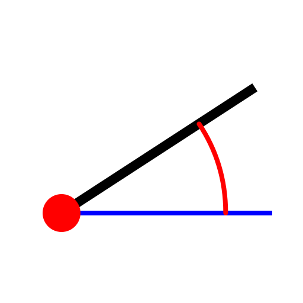

Linie mit Winkel
Werkzeugleiste / Symbol:


Menü: Zeichnen > Linie > Linie mit Winkel
Tastenkürzel: L, A
Kommandos: lineangle | la
Beschreibung:
Konstruiert Linien mit bekanntem Winkel. Die Linie muss in der Regel nach der
Konstruktion noch auf die richtige Länge getrimmt werden.
Vorgehensweise:
- Geben Sie den Winkel und die Länge der Linie in der
Optionenwerkzeugleiste ein.
- Wählen Sie den Referenzpunkt mit dem Sie die Linie platzieren möchten in
der Optionenwerkzeugleiste. 'Start' bedeutet, dass die Linie dort startet wo
Sie sie positionieren.
- Positionieren Sie die Linie mit der Maus oder geben Sie eine Koordinate
in die Kommandozeile ein.